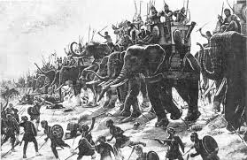

| |
Battle of Lake Trasimene
The Battle of Lake Trasimene was a major battle in the Second Punic War.The Carthagians were led by Hannibal who defeated Romans who were under the consul Gaius Flaminius.This Battle is one of the largest battle in military history as Hannibals strength was about 55,000 soldiers whereas Gaius Flaminius was of 30,000 soldiers .The battle took place in Lake Trasimene in Italy.As Hannibal passed Lake Trasimene,he came to a place very suitable for an ambush and hearing that Flaminius had broken camp and was persuing him,he made preparations for the impending battle.Hannibal camped to see if anyone entering northern defile and he spent his nights arranging his troops for the battle.On the Morning of June 21, Romans troops marched eastwards along the road .Eager for the battle ,Flaminius pushed his men hard and hurried up the column in the rear.Hannibal then sent his men for the battle and the battle resulted in Carthagians victory with about 2500 soldiers died in the battle.

Battle of Lake Trasimene
For
more information please visit :
More Information about the Battle of Lake Trasimene from wikipedia
| |
|
|